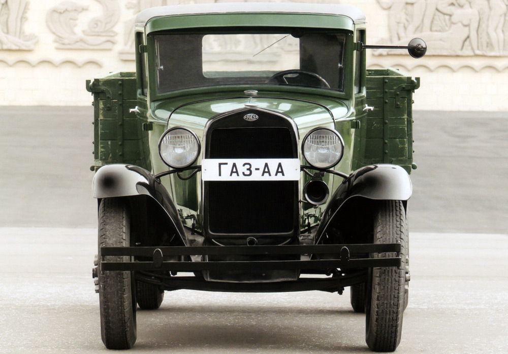
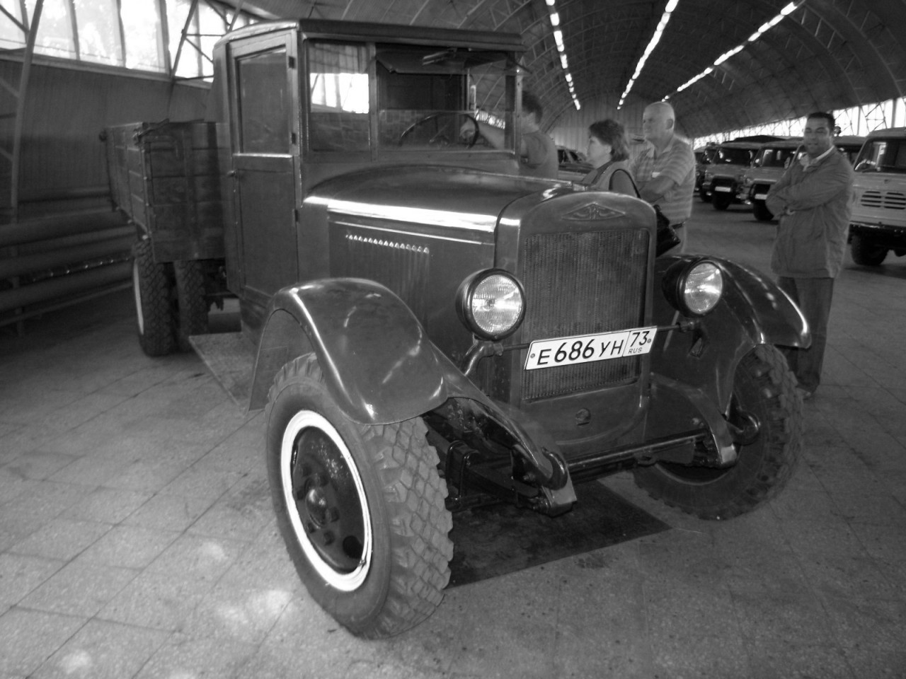

История Ульяновского автомобильного завода (УАЗ) начинается в мае 1942 года, начинал завод свою деятельность в качестве филиала Московского автозавода имени Сталина (ЗИС), который в конце 1941 года был вынужден эвакуироваться в города Поволжья и на Урал. Предприятие в Ульяновске, получившее название “УльЗИС”, до сентября 1944 г. производило сборку грузовых автомобилей ЗИС-5В. Одновременно с конца 1943 г. “УльЗИС” собирал из поступавших из США по ленд-лизу частей армейские грузовики “Студебекер” (Studebaker).
ГАЗ-АА
По окончании войны это предприятие переименовали в Ульяновский автомобильный завод, но он еще долгое время оставался сборочным производством, на этот раз Горьковского автозавода (ГАЗ). В 1947 г. там была развернута сборка грузовиков ГАЗ-ММ, с декабря 1954 г. параллельно с ГАЗом там выпускали легкие универсальные полно-приводные машины ГАЗ-69. Еще в 1946 г. в Научном автомоторном институте (НАМИ) в Москве для этого завода был разработан автомобиль “УльЗИС-253” с лицензионным 3-х цилиндровым 2-х тактным дизельным двигателем, производство которого планировалось развернуть на Ярославском автозаводе (ЯАЗ) по образцу американских моторов “Джи-Эм-Си” (GMC).
Джи-Эм-Си
1960 г. ознаменовался обновлением производственного оборудования. Конструкторский отдел разработал и запатентовал двигающую штанговую поточную линию. История создания УАЗ-451Д и УАЗ-451, которые собираются в усовершенствованных моделях и до нынешнего времени, начиналась в 1961-м. К середине декабря уже был собран первый опытный экземпляр.
УАЗ ИСТОРИЯ
Лучшая машина — новая УАЗ!